Manual do Aventureiro
Bem-vindo a HyBrasil – A Ilha Paraíso. Este manual contém o conhecimento essencial para guiar a sua jornada.
HyBrasil RPG - Manual do Aventureiro
Bem-vindo a HyBrasil – A Ilha Paraíso, a única ilha conhecida da existência, cercada por névoas eternas e habitada por criaturas de imenso poder. Este manual contém o conhecimento essencial para guiar a sua jornada e dominar o Motor de Regras.
As Ordens de HyBrasil (Classes)
Em HyBrasil, as Ordens não são simples guildas mercenárias, mas tradições vitais para a contenção das forças naturais hostis. Os heróis pertencem a uma destas cinco frentes, cada uma com o seu papel na sociedade e no campo de batalha.


Ordem da Lâmina (Guerreiros)
"Protege cidades e caravanas de ataques diretos e cercos."
Ataque Inicial: 2 | Vida Máxima: 4
Habilidade - Ataque Poderoso: Quando estiver na retaguarda ou na frente, aumenta o Ataque do próprio personagem num valor igual ao Nível. (Bônus não acumulativo).


Ordem da Flecha (Caçadores)
"Vigia fronteiras longínquas, florestas e estradas perigosas."
Ataque Inicial: 4 | Vida Máxima: 2
Habilidade - Ataque Preciso: Ataca exclusivamente da retaguarda. Causa dano direto (igual ao seu Ataque) à retaguarda inimiga, ignorando a Frente. Se restar apenas a Frente inimiga, causa dano reduzido (igual ao seu Nível).


Ordem do Véu (Magos)
"Estuda fenômenos arcanos raros e perigos sobrenaturais."
Ataque Inicial: 5 | Vida Máxima: 1
Habilidade - Ataque Mágico: Ataca da retaguarda com poder massivo, causando o seu dano total de Ataque diretamente ao inimigo que estiver na linha de Frente.


Ordem da Luz Silenciosa (Clérigos)
"Mantém comunidades unidas, trata feridos e acalma regiões instáveis."
Ataque Inicial: 1 | Vida Máxima: 5
Habilidade - Pulso de Cura: Atua na retaguarda. Em cada turno, recupera passivamente a Vida do aliado que estiver na Frente num valor igual ao seu Nível.


Ordem do Equilíbrio (Paladinos)
"Mediadores inabaláveis que intervêm quando o caos ameaça dominar."
Ataque Inicial: 3 | Vida Máxima: 3
Habilidade - Defesa Justiceira: Uma defesa de ferro. Independentemente de estar na Frente ou na Retaguarda, o Paladino ignora (bloqueia) dano igual ao seu próprio Nível sempre que sofre um ataque.
O Sistema de Combate Automático
Em HyBrasil RPG, as batalhas são intensas, estratégicas e resolvidas automaticamente pelo Mestre da IA (Gemini). O seu papel como jogador é gerir os atributos, tomar decisões de exploração e, fundamentalmente, escolher a Formação (Frente ou Retaguarda) da sua dupla antes dos embates.
A Arena de Batalha (HUD)
Quando um combate é acionado, a narrativa pausa e a Arena Visual é ativada. O ecrã divide-se em duas forças:
- O Seu Grupo: Os seus dois heróis posicionados conforme a sua escolha. Quem estiver na Frente é o alvo principal dos golpes corpo-a-corpo inimigos. A Retaguarda é para suporte e ataques de longo alcance.
- A Horda Inimiga: Uma fila dinâmica que pode conter até 6 inimigos. Lacaios de nível zero atuam como escudos na linha da frente, enquanto Criaturas Maiores preparam golpes devastadores a partir da terceira posição da fila.
A Ordem Exata dos Turnos
O Mestre IA processa toda a matemática nos bastidores e gera um Pergaminho de Resolução seguindo esta ordem inquebrável em cada turno:
- 1. Ataques Simultâneos (Frente): A Frente do jogador e a Frente inimiga colidem e causam o seu dano base de Ataque uma à outra simultaneamente.
- 2. Aplicação de Habilidades: Só após o choque frontal é que as habilidades táticas (como os tiros à retaguarda do Caçador, as curas do Clérigo ou os feitiços do Mago) entram em efeito para alterar o rumo do combate.
- 3. Quedas e Avanço de Fila: Se a Vida de uma criatura ou herói chegar a zero, eles caem. O elemento que estiver logo atrás na fila avança para assumir a Frente imediatamente.
- 4. Fim do Combate: O embate termina se todos os inimigos perecerem ou se ambos os heróis da dupla caírem.
Pós-Combate, Cura e Experiência (XP)
Se sobreviver ao confronto, a dupla tem a chance de se recompor. Ao final de cada vitória, a Vida de ambos os heróis é restaurada para a sua Vida Máxima automaticamente. Além disso, o sistema conta as suas glórias: a cada 2 vitórias exatas, o Mestre irá pausar a aventura e perguntar a qual dos dois heróis deseja atribuir +1 Ponto de Experiência (XP), o que melhorará os seus atributos ou os fará subir de nível!
Auxiliares Místicos (Companions) - Nível 2+
Ao atingir o Nível 2 (com 3 pontos de XP acumulados), o vínculo espiritual dos heróis manifesta um Auxiliar Místico. Eles não ocupam espaço na fila de combate, mas ligam-se à alma do herói, fornecendo benefícios distintos dependendo da posição de combate.
As Mecânicas do Vínculo
- Vanguarda (Se o herói estiver na Frente): O Auxiliar luta fisicamente, somando o seu próprio poder (+1 no Nível 2, +2 no Nível 3) ao Ataque base do herói.
- Duplicação Arcana (Se o herói estiver na Retaguarda): O Auxiliar entra em sintonia mágica, projetando uma cópia exata do efeito da habilidade especial do conjurador no mesmo turno.
- Sacrifício Leal: Se o herói na linha da Frente for receber um golpe letal que reduziria a sua Vida a zero, o Auxiliar intervém. O Auxiliar é sacrificado e removido do combate, anulando todo o dano daquele ataque, permitindo que o herói sobreviva com 1 Ponto de Vida.

Asa-de-Anis 🦅
Classe: Guerreiro(a)
Um majestoso falcão heráldico feito de energia pura e chamas azul-celestes.

Raposa Astral 🦊
Classe: Caçador(a)
Uma raposa celestial flutuante de três caudas que abriga poeira estelar em seu pêlo.

Serpente Etérea 🐍
Classe: Mago(a)
Uma veloz serpente formada por chamas violetas sólidas e runas arcanas antigas.

Sílfide da Alvorada 🧚
Classe: Clérigo(a)
Uma silhueta diminuta e esguia adornada com asas feitas de calor e luz dourada reconfortante.

Égide de Marfim 🐢
Classe: Paladino(a)
Uma tartaruga terrestre impassível, cujo casco é esculpido em pesados cristais de marfim.
Vilões Maiores (Chefes de Campanha)
Estas são as quatro forças primordiais que ameaçam desequilibrar a ilha. Encontros com estas entidades são raros, mortais e nunca acontecem sem que a ilha avise primeiro através de pesadelos e sinais.

Rainha da Colmeia
Força Regente: Os Selvagens
A soberana absoluta da mente coletiva. Comanda exércitos insetoides e artrópodes gigantes com um foco militar devastador, assimilando a biologia de HyBrasil.

Poderoso Dragão
Força Regente: As Bestas
O próprio poder destrutivo ancestral de HyBrasil encarnado em escamas colossais de fogo místico e fúria primal capaz de derreter as montanhas de Pedralta.

Oráculo Abissal
Força Regente: Os Monstros
Uma entidade profética e distorcida oriunda das trincheiras abissais. Os seus múltiplos olhos e tentáculos baralham a mente dos homens antes de lhes rasgar a carne.

Senhor das Trevas
Força Regente: Os Mortos
Senhor absoluto do tempo decaído e da memória esquecida. É capaz de reerguer e escravizar os ecos sombrios e as almas passadas dos que caíram na névoa.
Visão Geral de HyBrasil
HyBrasil é a única ilha conhecida da existência, cercada por névoas eternas. Não há relatos confiáveis de terras além de seus limites. A cultura geral remete a um mundo antigo, pré-industrial, com cidades muradas, rotas comerciais limitadas e forte dependência da terra e do mar.
A ilha é vista como um palco de jornadas, não um paraíso perfeito. Conflitos, monstros e desafios são partes naturais da vida.
Cidades Principais e Ambientes
Cidades
Cada região possui uma cidade central: Marés (porto e comércio marítimo), Areias (cidade-oásis), Hyron (centro político e cultural), Raizterna (vila em harmonia com árvores), Ferrocrua (cidade-fortaleza mineradora) e Pedralta (assentamento elevado).
Ambientes Naturais
Os ambientes variam entre a instabilidade dos mares na Costa, o calor e ruínas do Deserto, a mística Floresta, os túneis e ecos das Minas, a altitude das Montanhas e a tensão política da Zona Urbana.
Cultura, Magia e Fé
A população valoriza jornadas, resistência e pragmatismo. Heróis são vistos como necessários, não divinos. A sobrevivência coletiva supera a glória pessoal.
A Magia é um conhecimento profundo e perigoso, visto com receio. Já a Fé baseia-se em forças amorais: O Caminhante (Jornada/Destino), A Mãe Silenciosa (Vida/Morte) e O Guardião do Véu (Conhecimento/Magia).
A Natureza dos Monstros
Monstros não são anomalias, mas forças naturais de HyBrasil:
- Selvagens (vs Guerreiros): coletivos agressivos, como colmeias.
- Bestas (vs Caçadores): criaturas animalescas com poder místico.
- Monstros (vs Magos): abominações sobrenaturais e presságios.
- Mortos (vs Clérigos): ecos de vidas passadas.
Nota: Paladinos não possuem contraparte monstruosa direta, atuando como o elo de equilíbrio do sistema.
Ambientes de HyBrasil
HyBrasil possui 30 ambientes distintos distribuídos pelas 6 regiões da ilha. O Narrador escolhe automaticamente o cenário com base na localização da dupla.
Marés
Praia
Porto
Areias
Deserto
Cidade no Deserto
Ruínas
Hyron
Grande Cidade
Castelo
Fortaleza
Salão do Trono
Torre
Vila Rural
Aldeia
Templo
Interior do Templo
Raizterna
Floresta
Cidade na Floresta
Bosque
Pântano
Campos Abertos
Ferrocrua
Mina
Cidade Mineira
Masmorra
Gruta
Caverna de Lava
Caverna de Pedra
Laboratório
Pedralta
Montanha
Neve
Caverna Gelada
Cidade Nevada
Bestiário Completo
Todas as 150 criaturas de HyBrasil, organizadas em 15 grupos. Cada grupo tem 5 lacaios e 5 criaturas maiores.
Aquáticos Monstros Bestas
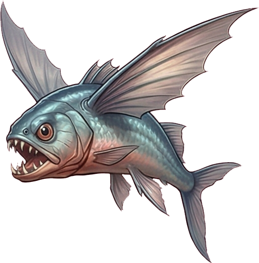
Salta da água em bando e rasga presas com dentes serrilhados antes de mergulhar de volta.
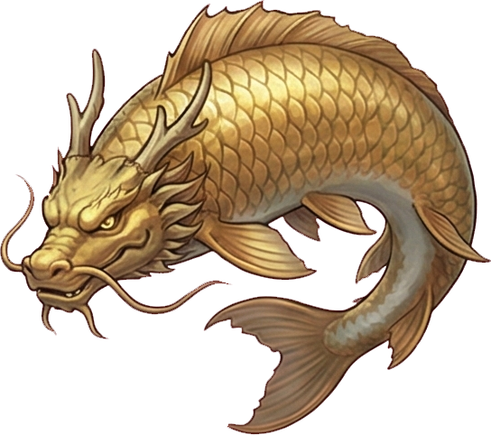
Carpa com cabeça de dragão e escamas metálicas; devora remos e cascos de barcos por instinto.
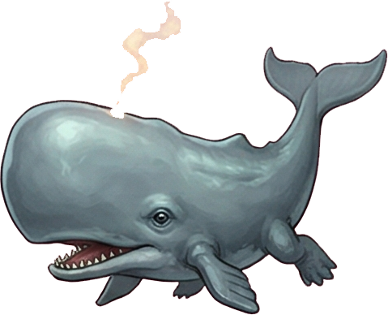
Baleia abissal infante que ainda não controla a força; seu coice involuntário afunda botes.
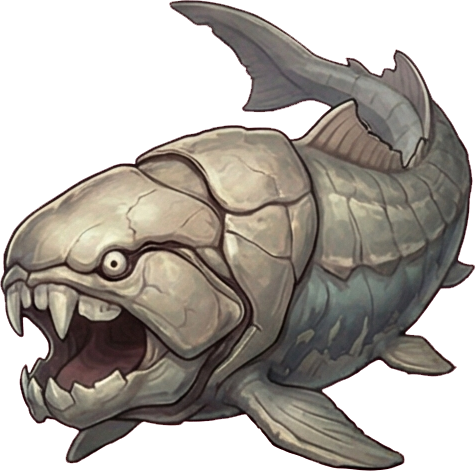
Peixe blindado de carapaça óssea que avança devagar e implacavelmente, ignorando golpes rasos.
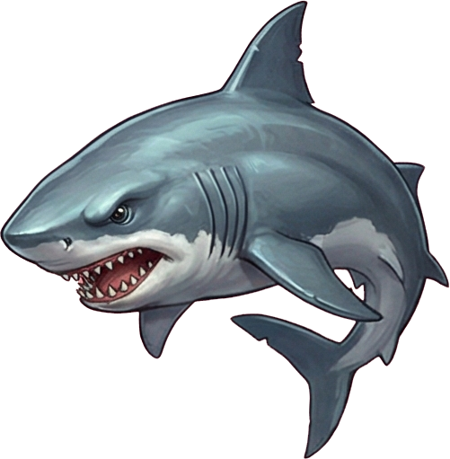
Tubarão primordial ainda jovem; já capaz de partir um remo com uma mordida distraída.
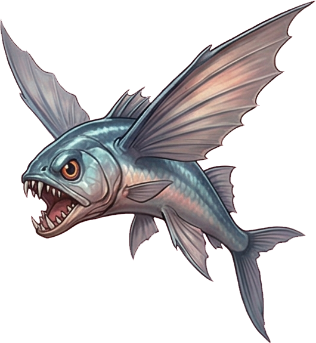
Lidera a revoada com velocidade sobrenatural; seu bote perfura armaduras como agulha em tecido.
Escamas douradas endurecidas pelo tempo; cospe jatos de água pressurizada que cortam pedra.
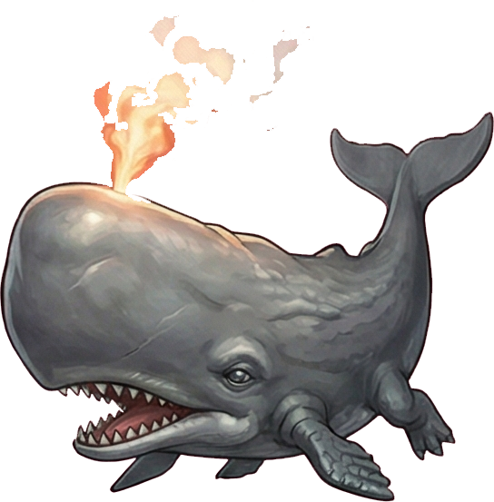
Massa colossal que respira fogo pela espiradora; sua passagem cria ondas que destroem portos.
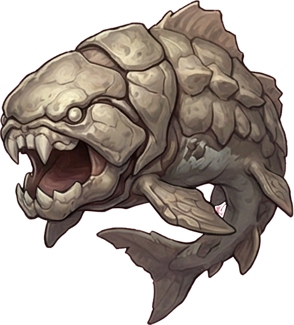
Carapaça ancestral que desvia lâminas; avança sem parar até esmagar tudo em seu caminho.
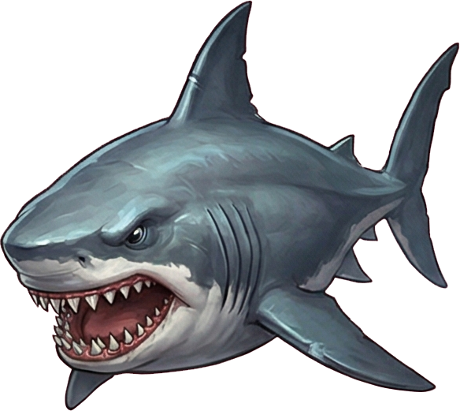
Predador completo das profundezas; seus dentes do tamanho de espadas regeneram em horas.
Bestas Monstros Bestas
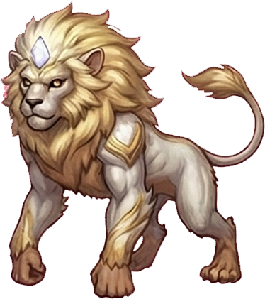
Leão mítico jovem de juba dourada; sua mordida ainda é tímida mas seu rugido paralisa.
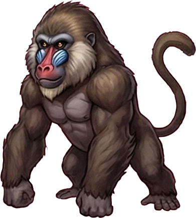
Primata jovem de face colorida que imita os gestos dos adultos antes de atacar.
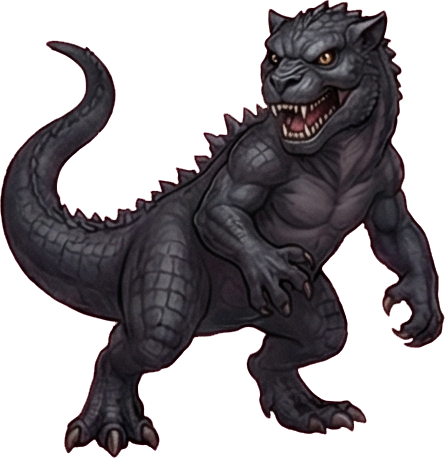
Dragão bípede jovem de escamas negras; já derruba árvores ao tropeçar.
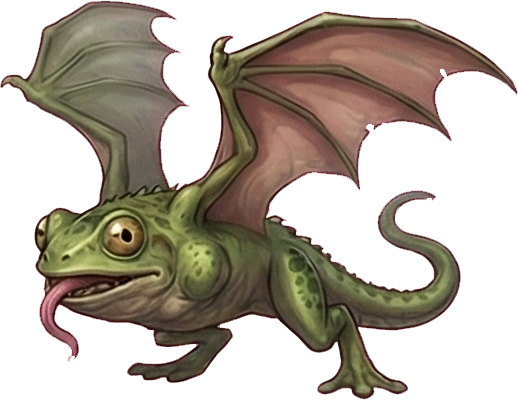
Lagarto alado rechonchudo que usa o corpo inteiro como escudo enquanto morde devagar.
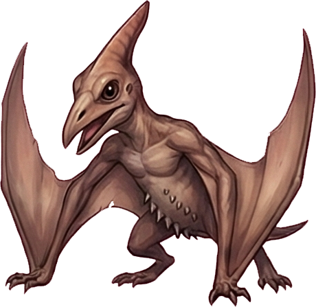
Pterossauro filhote de bico afiado que mergulha em picada antes mesmo de aprender a planar.
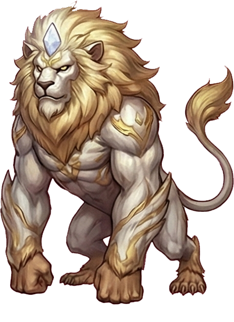
Leão mítico de juba dourada e cristal na testa; seu rugido cura aliados e aterra inimigos.
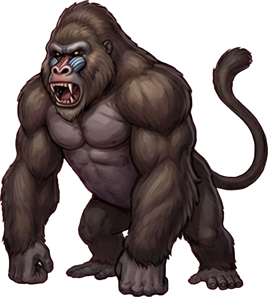
Gorila colossal de face azul e vermelha; usa troncos como maças e rugidos como armas.
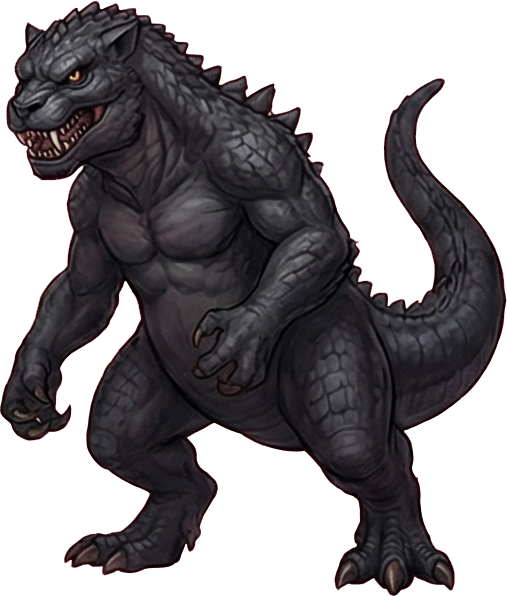
Dragão bípede adulto cujo rugido provoca tremores; pisada deixa crateras no solo.
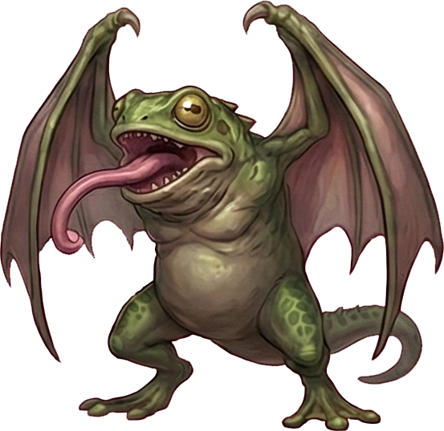
Lagarto alado volumoso que usa as asas como escudo e a língua como chicote de longo alcance.
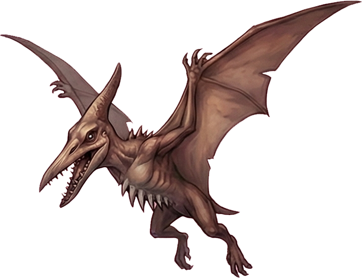
Pterossauro adulto que caça em mergulho rasante; seu bico perfura armadura de placa.
Felinos Monstros Mortos Bestas
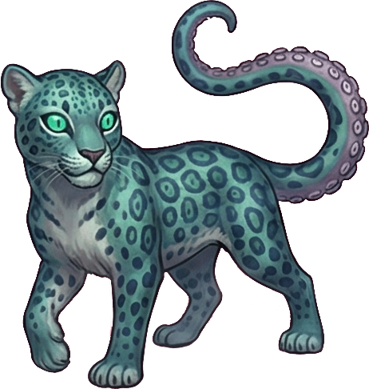
Leopardo de manchas turquesa com cauda tentacular; caça tanto na água quanto em terra firme.
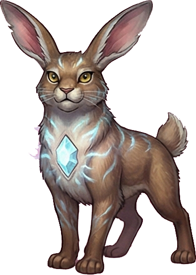
Coelho místico com cristal no peito que absorve golpes; inofensivo na aparência, imprevisível no ataque.
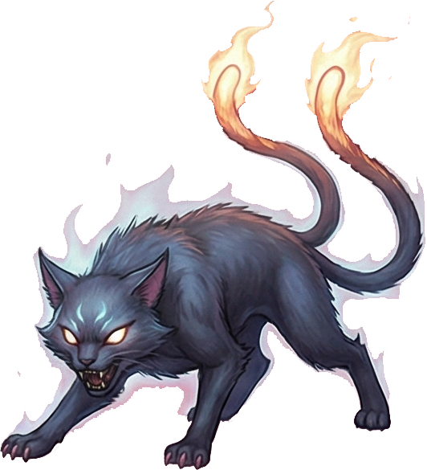
Gato espectral de cauda dupla em chamas; desaparece em fumaça ao ser golpeado e reaparece atrás.
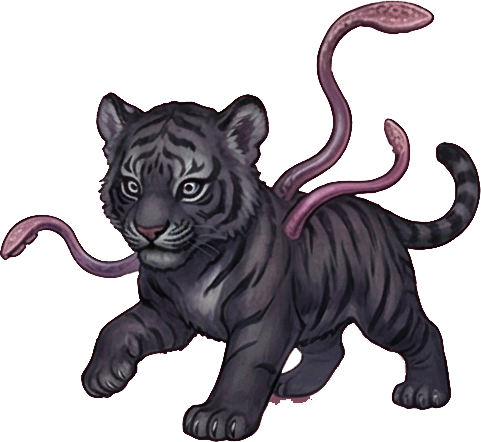
Tigre negro jovem com tentáculos que já se teletransporta em curtas distâncias ao sentir perigo.
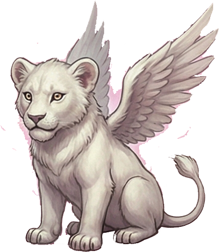
Leão alado filhote de pelagem branca; suas asas ainda não sustentam voo mas bloqueiam golpes.
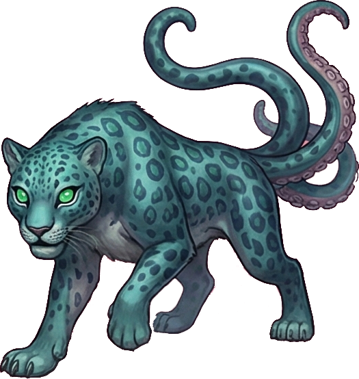
Predador perfeito de terra e água; usa os tentáculos para imobilizar enquanto as garras finalizam.
Cristal no peito amplificado pulsa com energia mística; reflete parte do dano recebido nos atacantes.
Gato morto-vivo envolto em chamas furiosas; cada golpe deixa marcas que não cicatrizam normalmente.
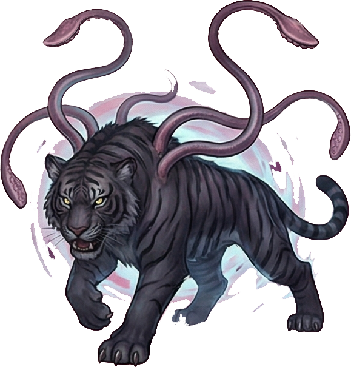
Tigre negro adulto com tentáculos que se teleporta entre golpes; nunca está onde parece estar.
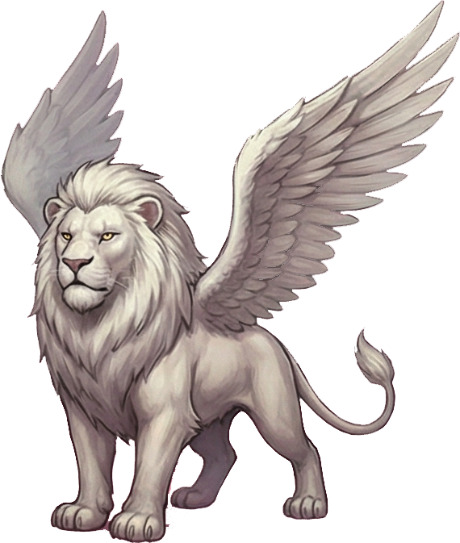
Leão alado majestoso de pelagem prateada; suas asas criam ventos que desviam projéteis e feitiços.
Corrompidos Monstros Selvagens Mortos
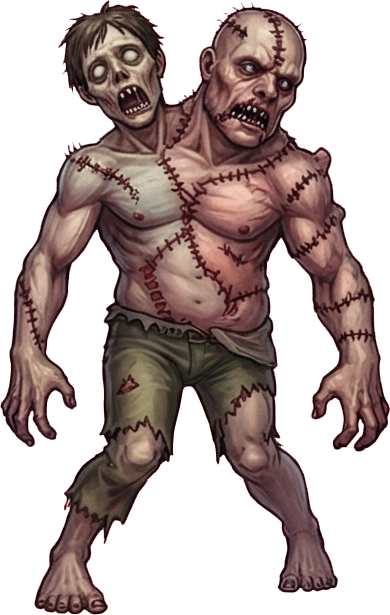
Dois corpos costurados que compartilham um único propósito destrutivo; golpes os separam mas não os param.
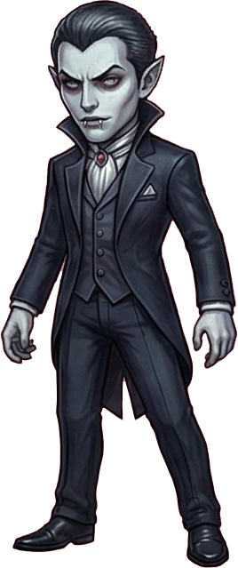
Vampiro recém-transformado de terno impecável; ainda aprende a controlar a sede mas já é letal.
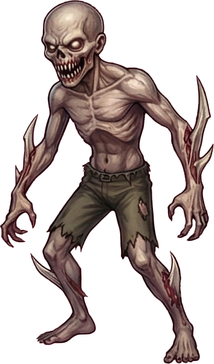
Morto-vivo de garras ósseas que se arrasta pelo chão; lento mas não para enquanto houver carne.
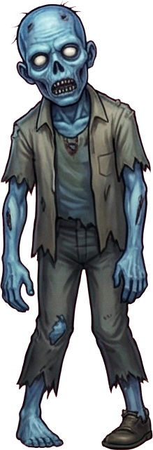
Morto-vivo que preserva memória fragmentada; reconhece rostos de quem amou e avança mesmo assim.
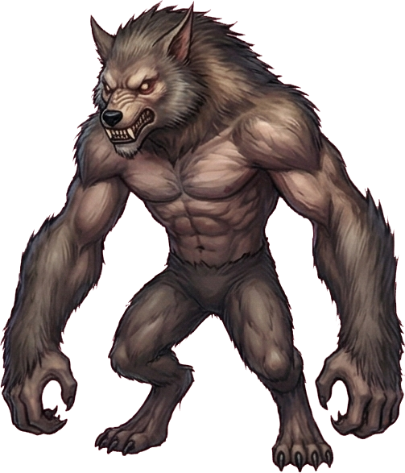
Transformação recente e instável; oscila entre forma humana e besta, tornando seus movimentos imprevisíveis.
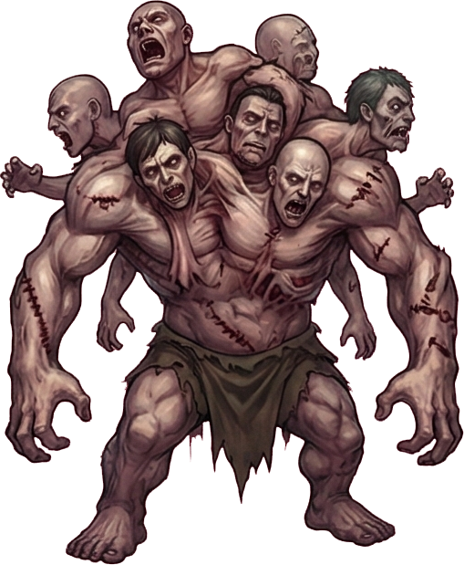
Massa de corpos fundidos que absorve os caídos em batalha; cresce a cada vítima incorporada.
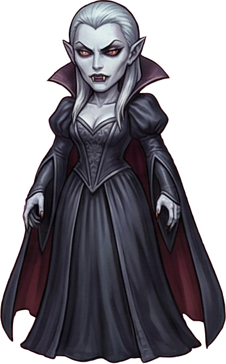
Vampira anciã de capa carmesim; drena vida com o olhar e regenera feridas à vista dos inimigos.
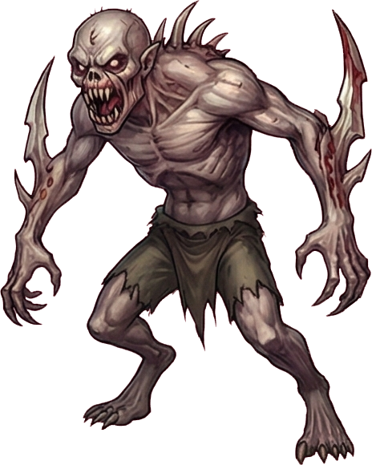
Líder dos carniçais com garras do tamanho de adagas; ressuscita menores caídos com um uivo gutural.
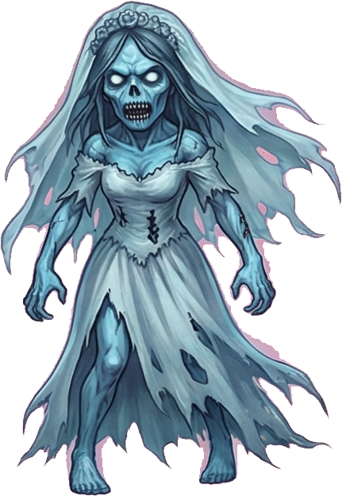
Espectro de noiva que nunca chegou ao altar; seu toque drena vida e seu véu congela o ar ao redor.
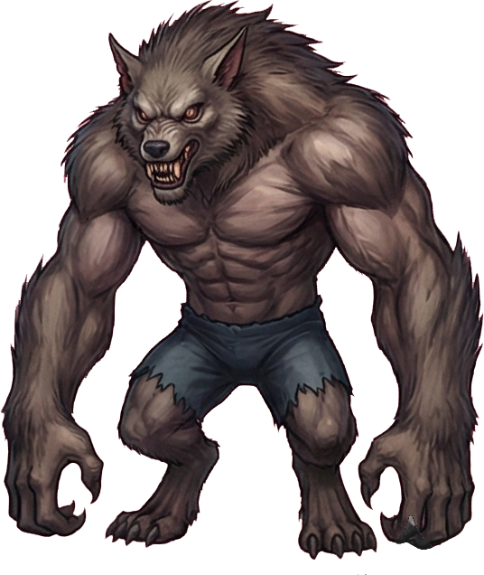
Lobisomem que abraçou completamente a besta; lidera alcateias com uivos que ecoam por léguas.
Semi-Humanos Monstros Selvagens
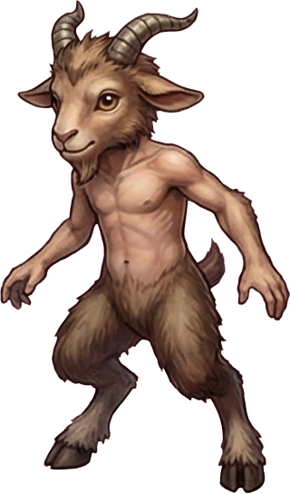
Sátiro jovem de chifres ainda curtos; ágil e imprevisível, ataca em revoadas de coices.
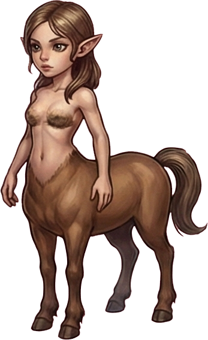
Centaura exploradora de tribo selvagem; carrega arco e flecha e dispara em galope sem perder precisão.
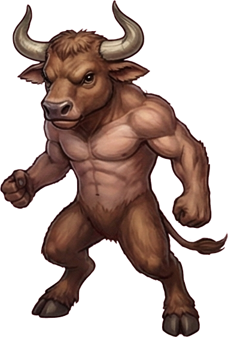
Minotauro ainda em crescimento; sua cabeça de touro já resiste a golpes que derrubariam adultos.
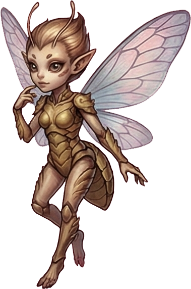
Fada guerreira jovem de asas translúcidas; usa espinhos do próprio corpo como projéteis.
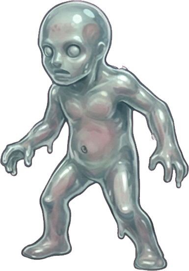
Ser translúcido sem feições que imita silhuetas ao redor; ainda não domina a transformação completa.
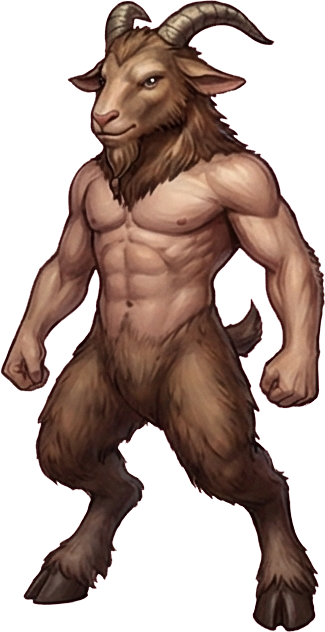
Sátiro adulto de chifres retorcidos que lidera hordas com música caótica e golpes devastadores.
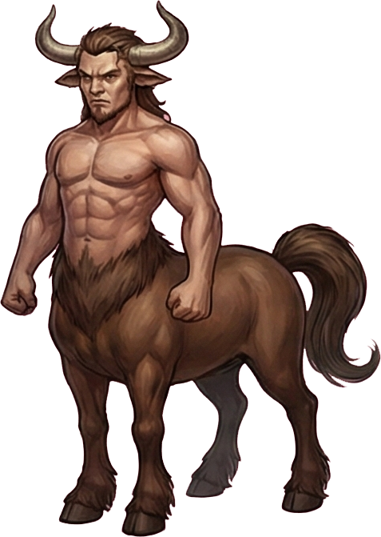
Guerreiro centauro adulto de chifres dourados; sua carga rompe formações inteiras com uma passagem.
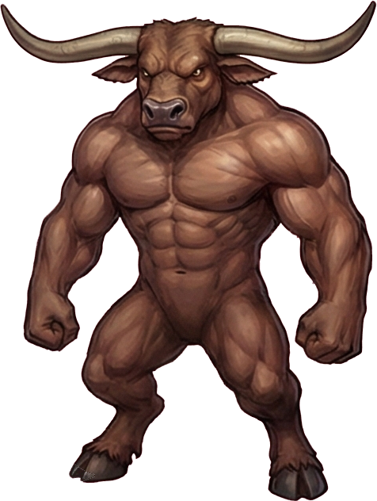
Minotauro adulto de chifres enormes que usa o próprio corpo como aríete contra muros e escudos.
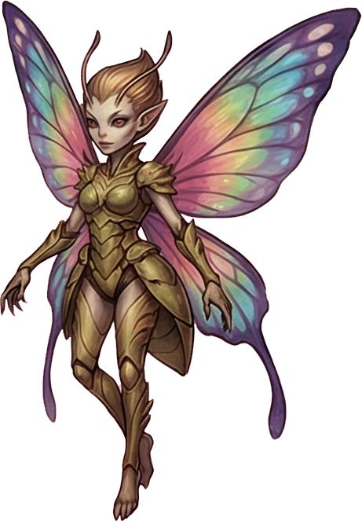
Fada anciã de asas iridescentes que comanda enxames; seus espinhos envenenados paralisam em segundos.
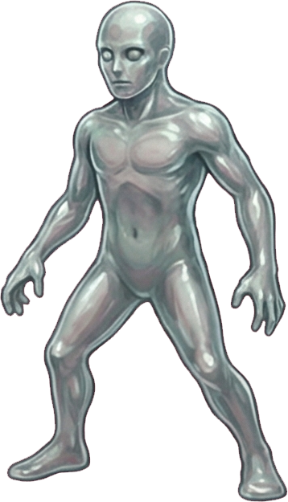
Ser prateado que assume forma perfeita de qualquer pessoa; sua cópia é indistinguível do original.
Dinossauros Monstros Bestas
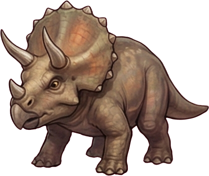
Ceratopsiano filhote cujos chifres já perfuram madeira; carrega de cabeça sem avaliar o tamanho do alvo.
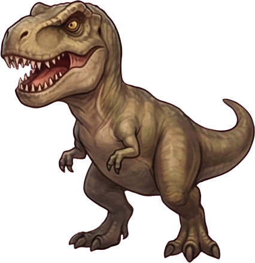
Rex jovem de mordida desproporcional ao corpo; já parte ossos com facilidade apesar do tamanho reduzido.
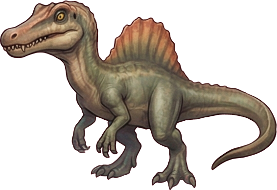
Espinossauro filhote com vela dorsal ainda translúcida; caça à beira d'água com velocidade surpreendente.
Hadrossauro jovem de focinho largo; corre em manada e atropela obstáculos sem perceber.
Sauropode filhote de pescoço longo; já usa a cauda como chicote e derruba árvores ao se virar.
Ceratopsiano adulto com chifres e couraça metálicos; sua carga perfura armaduras como papel.
Rex adulto com olhos incandescentes e rugido que provoca tremores; apex predador de qualquer região.
Espinossauro adulto com vela dorsal de gelo cristalizado; congela rios inteiros ao mergulhar.
Hadrossauro adulto de musculatura avantajada; lidera manadas e esmaga formações com cargas rasantes.
Sauropode adulto com couraça pétrea natural; sua passagem deixa crateras e seu rabo derruba muralhas.
Caninos Mortos Bestas
Lobo negro de porte colossal que caça em duplas; um distrai enquanto o outro ataca pela garganta.
Lobo branco morto-vivo que sopra névoa gélida; seu uivo congela poças e paralisa pelo frio.
Filhote de warg já maior que um lobo adulto; aprende a caçar imitando os movimentos da matilha.
Filhote de cérbero de três cabeças que mordem em turnos alternados; difícil de flanquear.
Cão negro com rachaduras de brasa no pelo; rasteja pelo esgoto e ataca pelo calor que emana.
Alfa da matilha de cicatrizes profundas; seu rugido faz outros predadores recuarem instintivamente.
Lobo morto-vivo envolto em aura glacial; congela blocos inteiros de terreno com uma exalação.
Warg adulto que nenhum selvagem domou; lidera matilha mista de lobos e wargs por puro terror.
Cérbero adulto guardião das catacumbas; suas três cabeças mordem simultaneamente em direções opostas.
Cão infernal ancião completamente em chamas; seu latido desperta os mortos em cemitérios próximos.
Equinos Monstros Selvagens Mortos Bestas
Equino selvagem de presas e garras no lugar de cascos; caça em manada e derruba presas pelo peso.
Equino ágil de patas extras que nunca tropeça; explora terrenos inóspitos com facilidade absurda.
Potro morto-vivo com chamas nos cascos; galopa sem parar e seu relincho desperta pesadelos.
Cavalo blindado que ataca em formação coordenada; usa coices e mordidas com disciplina militar.
Unicórnio corrompido jovem de aura elétrica; seu chifre drena vida em vez de curar.
Alfa da manada de presas afiadas; sua carga parte formações e seu rugido paralisa de medo.
Equino adulto de seis patas que corre em superfícies verticais; não há terreno que o impeça.
Corcel morto-vivo completamente em chamas; qualquer cavaleiro morto ressuscita automaticamente em seu dorso.
Corcel blindado adulto que lidera cargas coordenadas; aprende táticas de cada batalha que sobrevive.
Unicórnio corrompido de asas e aura de relâmpago; drena vida de um raio e regenera a própria.
Goblins Selvagens Mortos
Jacaré morto-vivo de escamas iridescentes que finge estar inerte até a presa se aproximar.
Criatura azul de faca dupla que trabalha em grupo para roubar provisões e sabotar acampamentos noturnos.
Espírito de juba vermelha que dribla aventureiros com truques e rouba itens enquanto os distrai.
Cervo selvagem de olhos vazios que corre em manada; usa os chifres para desarmar e derrubar.
Goblin armado com machado tosco que caça em grupos; usa armadilhas de cipó para derrubar cavaleiros.
Jacaré morto-vivo adulto de escamas multicoloridas; sua mandíbula parte armaduras e não solta a presa.
Diabrete adulto de asas de morcego que lidera bandos com táticas militares rudimentares e eficazes.
Espírito ancião que organiza saques coordenados usando menores como distração enquanto rouba o essencial.
Cervo colossal de chifres retorcidos que lidera manadas; sua carga rompe portões de madeira.
Chefe de tribo que negocia alianças mas honra apenas enquanto convém; comanda com violência e astúcia.
Construtos Monstros
Construto robusto de pedra musgo que guarda posição; lento mas praticamente indestrutível.
Construto esguio de pedra clara com símbolo na testa; move-se em diagonal e ativa outros golems próximos.
Construto centauroide de pedra que patrulha em movimentos em L; imprevisível e difícil de flanquear.
Construto dourado compacto de punhos pesados; avança em linha reta esmagando tudo no caminho.
Construto feminino de pedra polida que ataca em qualquer direção; o mais versátil dos peões.
Construto colossal de pedra e musgo com coroa gravada; destruí-lo paralisa todos os golems do tabuleiro.
Construto sacerdotal de manto de pedra que reativa golems destruídos com um toque; destruí-lo é prioridade.
Centauroide de pedra adulto com runas ativas; salta sobre obstáculos e esmaga com as patas dianteiras.
Construto maciço com cabeça de fortaleza; lança fragmentos de pedra com precisão de catapulta.
Construto feminino esbelto de pedra polida; comanda todos os outros e ataca com precisão absoluta em qualquer direção.
Grifos Bestas
Esfinge jovem de face humana que já faz perguntas sem resposta e ataca quem hesita.
Grifo coruja jovem de olhos enormes que enxerga no escuro absoluto; mergulha em silêncio total.
Grifo colorido jovem cujo canto ressoa entre picos e desorienta grupos inteiros nas trilhas.
Filhote de grifo real de plumagem branca; sua presença já impõe respeito e outros animais recuam.
Grifo negro jovem de bico corvino; silencioso e furtivo, ataca pelo cego sem aviso.
Sabe a resposta de todas as perguntas que faz; mata por diversão, não por fome.
Grifo coruja ancião que enxerga medos de cada oponente; seu mergulho é invisível até o impacto.
Grifo adulto de plumagem iridescente; seu canto pode ser ouvido a quilômetros e convoca a ninhada inteira.
Rei das criaturas aladas de montanha; sua presença paralisa animais de carga e silencia multidões.
Grifo negro adulto que voa sem som; onde pousa, a luz das tochas vacila e o frio aumenta.
Serpentes Monstros Mortos Bestas
Serpente de cabeça dracônica que caça erguida; sua mordida injeta veneno que paralisa membros.
Constritora jovem das águas rasas que já imobiliza presas do seu tamanho com facilidade.
Serpente alada morta-viva de plumagem iridescente que ataca em grupos sincronizados silenciosamente.
Híbrido de serpente e torso humanoide morto-vivo; seus olhos vazios hipnotizam presas à beira d'água.
Réptil alado jovem cujo olhar já petrifica extremidades; coleciona pequenos troféus de pedra.
Serpente dracônica adulta que emite pulsos vocais coordenando ataques das menores ao redor.
Constritora adulta capaz de quebrar armaduras; engole aventureiros com equipamento completo.
Coalt adulto morto-vivo de plumagem negra; seu voo silencioso precede ataques devastadores em mergulho.
Sacerdotisa morta-viva das profundezas que tece feitiços de ilusão; faz aventureiros se afogar em terra seca.
Petrifica tudo no campo de visão progressivamente; seus troféus de pedra nunca se desfazem naturalmente.
Alados Selvagens Mortos
Harpia jovem que ataca em mergulho rasante roubando itens de aventureiros para decorar ninhos.
Ave morta-viva de descargas elétricas que ainda não controla o poder; especialmente perigosa em locais metálicos.
Corvo morto-vivo de plumagem metálica que coordena ataques em bando com sinais vocais complexos.
Galo morto-vivo de cauda serpentina cujo olhar petrifica progressivamente começando pelos pés.
Cisne espectral jovem envolto em névoa gélida; onde pousa a temperatura cai e plantas morrem.
Matriarca da ninhada que controla ventos de montanha com as asas para derrubar aventureiros.
Ave morta-viva que invoca tempestades reais; altera o clima de toda uma cordilheira com um bater de asas.
Comandante da corvada morta-viva; usa táticas de cerco e aprisionou grupos inteiros de aventureiros.
Cocatriz adulta que petrifica tudo no campo de visão simultaneamente; sua pedra nunca se desfaz.
Cisne espectral adulto de névoa densa; sua passagem congela lagos e apaga fogueiras num raio enorme.
Artrópodes Selvagens
Criatura pequena que libera fumaça tóxica ao morrer, sinalizando a localização de presas para o bando.
Verme subterrâneo jovem que emerge sem aviso; seu corpo segrega ácido que corrói metal e pedra.
Inseto jovem que destrói provisões e plantações em minutos quando em bando coordenado.
Aranha jovem que já tece teias resistentes como aço; suas presas morrem presas antes de perceber.
Centopeia jovem que ataca em cadeia; quando uma morde, dezenas emergem da areia ao redor.
Wyvern verme adulto de asas membranosas; sua fumaça pode cobrir um oásis inteiro e asfixiar grupos.
Verme colossal que cresce até o tamanho de uma carroça; seus túneis desestabilizam fortalezas inteiras.
Rainha do enxame de asas translúcidas; carrega ovos no dorso e os choca em plena batalha.
Aranha de torso humanoide que tece labirintos em ruínas; quem entra raramente encontra a saída.
Centopeia adulta que emerge apenas para caçar grandes presas; coordena bando com feromônios.
Serpes Monstros Selvagens Mortos Bestas
Serpe monstruosa de escamas de prata que reflete ataques mágicos; seu veneno corrói o ferro.
Dragão bípede jovem que cospe chamas instáveis; incendeia o próprio território sem perceber.
Serpe híbrida de plumagem e escamas que lidera bandos com gritos agudos; territorial e implacável.
Serpe morta-viva de escamas negras que acumula carga elétrica; seu toque paralisa membros.
Serpe branca de chifres ramificados que exhala névoa gélida; congela poças ao pousar.
Serpe monstruosa de escamas douradas endurecidas pelo tempo; regenera feridas à vista dos inimigos.
Dragão bípede ancião cujas chamas derretem pedra; incendeia galerias inteiras como estratégia de caça.
Rainha das serpes de plumagem iridescente; comanda bandos inteiros com gritos que ecoam por léguas.
Serpe morta-viva que provoca colapsos elétricos paralisando aventureiros inteiros; usa o tempo para matar devagar.
Serpe branca de chifres enormes que sela entradas de caverna com gelo; territórios marcados com camadas azuis.